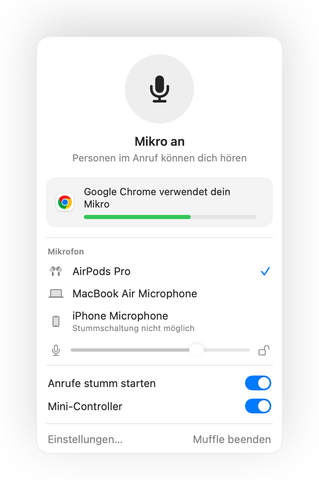

So verhinderst du, dass Apps deinen Mikrofonpegel am Mac verändern
Viele Konferenz-Apps passen deinen Eingangspegel automatisch an, eine Funktion namens automatische Verstärkungsregelung. Du stellst in den Systemeinstellungen alles passend ein, startest ein Google Meet und kurz darauf verstellt sich der Regler, sodass dich andere im Anruf kaum noch oder verzerrt hören.
Muffle kann deinen Mikrofonpegel sperren. Sobald eine App den Pegel ändert, setzt Muffle ihn augenblicklich wieder zurück.
Mikrofonpegel sperren
- 1
Installiere Muffle.
- 2
Klicke auf das Muffle-Symbol in der Menüleiste und stelle deinen Wunschpegel mit dem Schieberegler ein.
- 3
Klicke auf das Schlosssymbol neben dem Regler.
- 4
Starte deine Videoanrufe. Dein Mikrofonpegel bleibt exakt so, wie du ihn eingestellt hast.

- Muffle weist dich im Menü darauf hin, wenn dein Pegel während eines Anrufs zu niedrig eingestellt ist.
- Die Sperre speichert den Pegel für jedes Mikrofon separat, sodass deine AirPods, dein Kopfhörer und das interne Mac-Mikrofon jeweils eigene Werte behalten.
Häufige Fragen
Warum verstellt sich mein Mac-Mikrofonpegel ständig von selbst?
Programme wie Chrome, Zoom und Teams nutzen automatische Verstärkungsregelung und ändern die Systemeinstellung für den Eingangspegel während des Gesprächs.
Kann ich den Pegel trotzdem noch manuell anpassen?
Ja. Nutze einfach den Schieberegler in Muffle, dadurch wird der gesperrte Wert direkt aktualisiert.